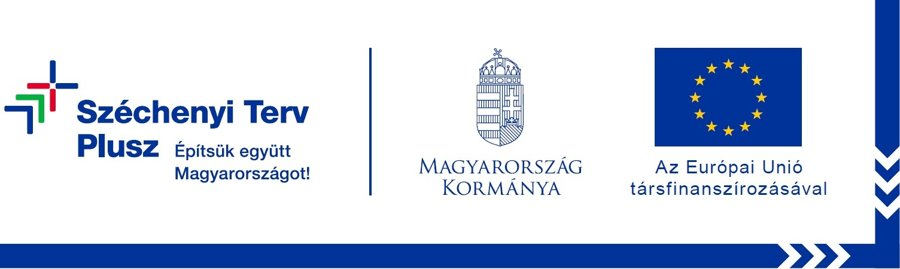

GINOP Plusz-1.2.2-22
Nyertes pályázatunk
- Kedvezményezett
- KISSTERV Településtervezési, Szakértői, Mérnöki, Szolgáltató és Ingatlanértékesítő Korlátolt Felelősségű Társaság
- Projektazonosító
- GINOP_PLUSZ-1.2.2-22-2022-02198
- Szerződött támogatás
- 7 849 569 Ft
- Tervezett befejezés
- 2023. 09. 30.
- A fejlesztés tárgya, célja
- A projekt keretében eszközbeszerzés és ingatlanfejlesztés valósul meg; cél a vállalkozás működési hatékonyságának növelése.
A projekt tartalma
A fejlesztés során 1 db futópad (Master F38) beszerzése valósul meg, amely a 96.04 — Fizikai közérzetet javító szolgáltatáshoz kapcsolódik.
Ezen túlmenően a pályázattal érintett 5350 Tiszafüred, Fő út 29. szám alatti ingatlan átalakítása és korszerűsítése valósul meg, amely a 68.20 — Saját tulajdonú, bérelt ingatlan bérbeadása, üzemeltetése, valamint a 96.04 — Fizikai közérzetet javító szolgáltatás tevékenységek fejlesztését szolgálja.
Az épület átalakításának célja, hogy az ingatlan bizonyos részeit a vevői igényeknek megfelelően ki tudjuk alakítani és bérbe adni.
